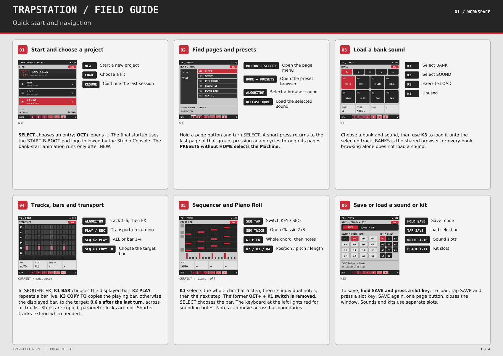
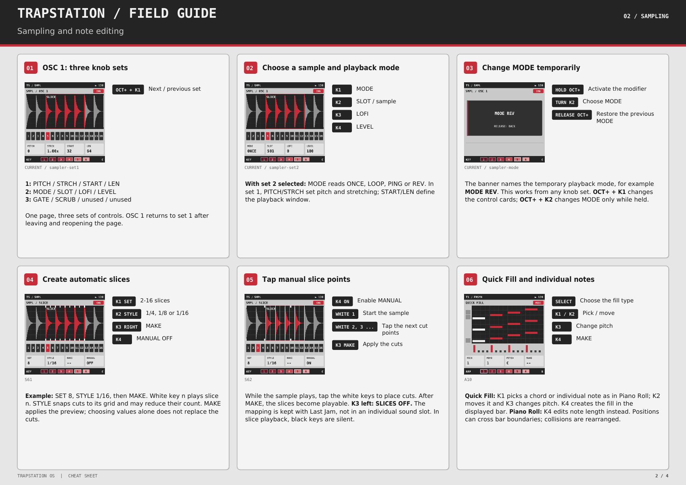
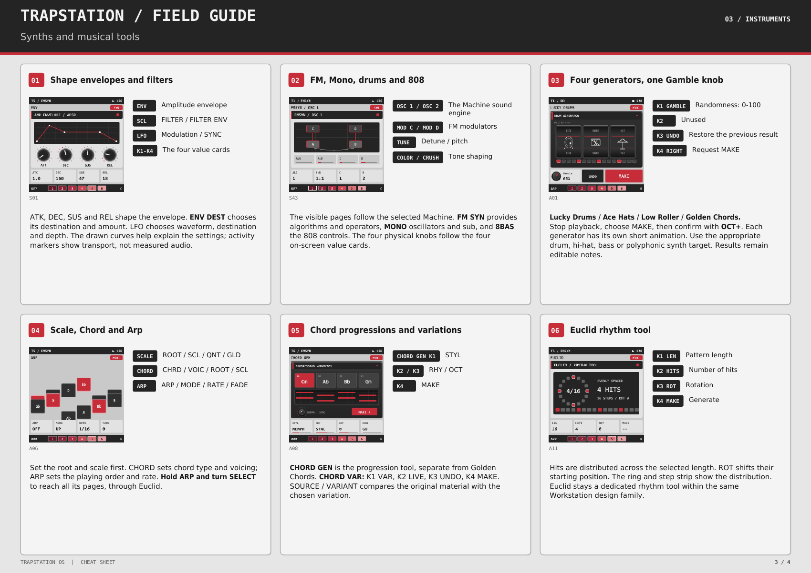
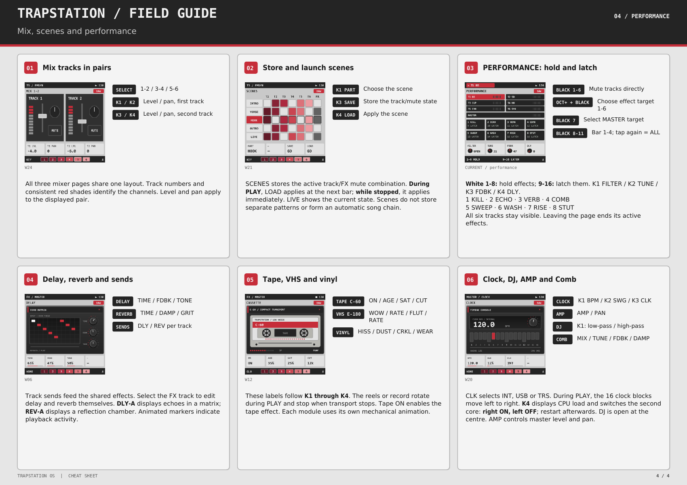
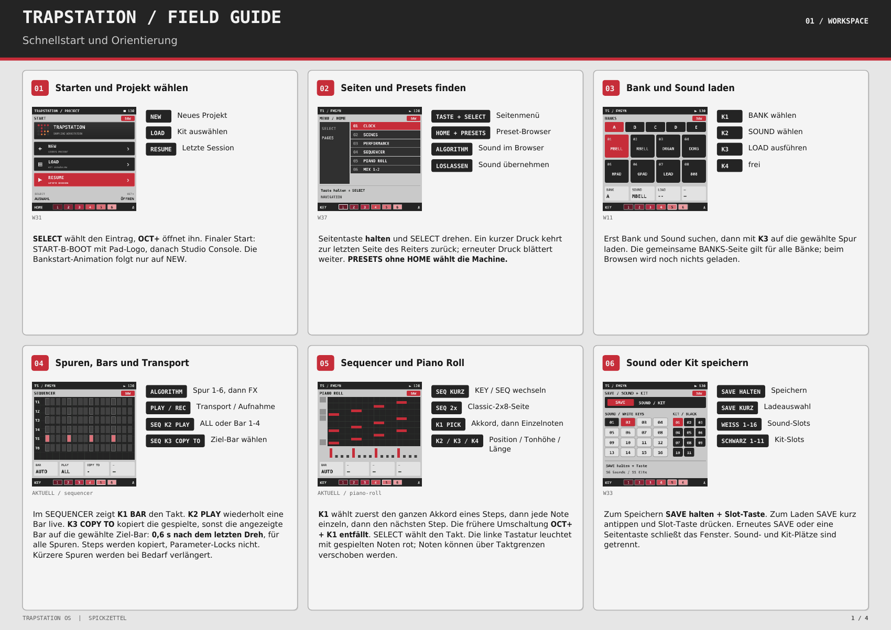
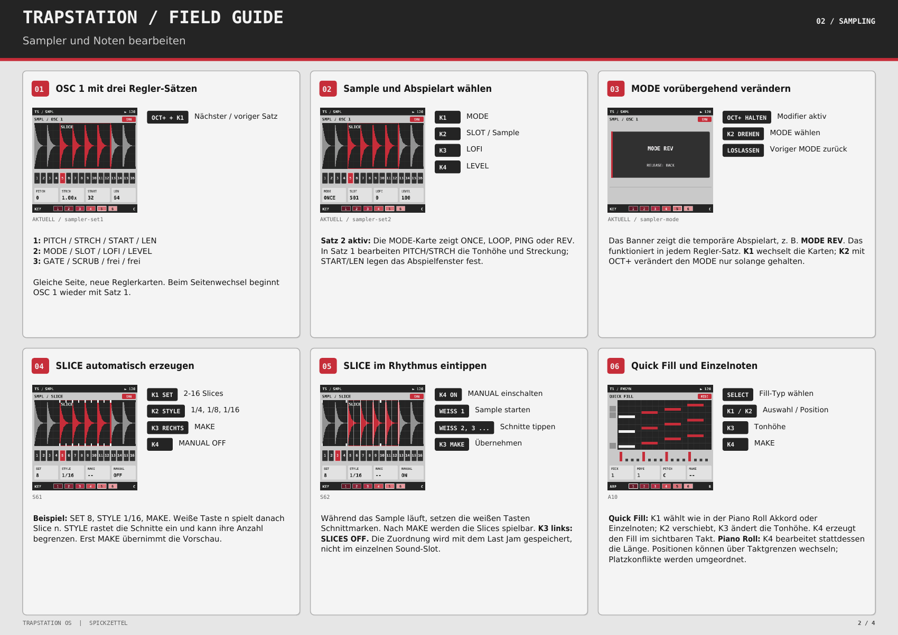
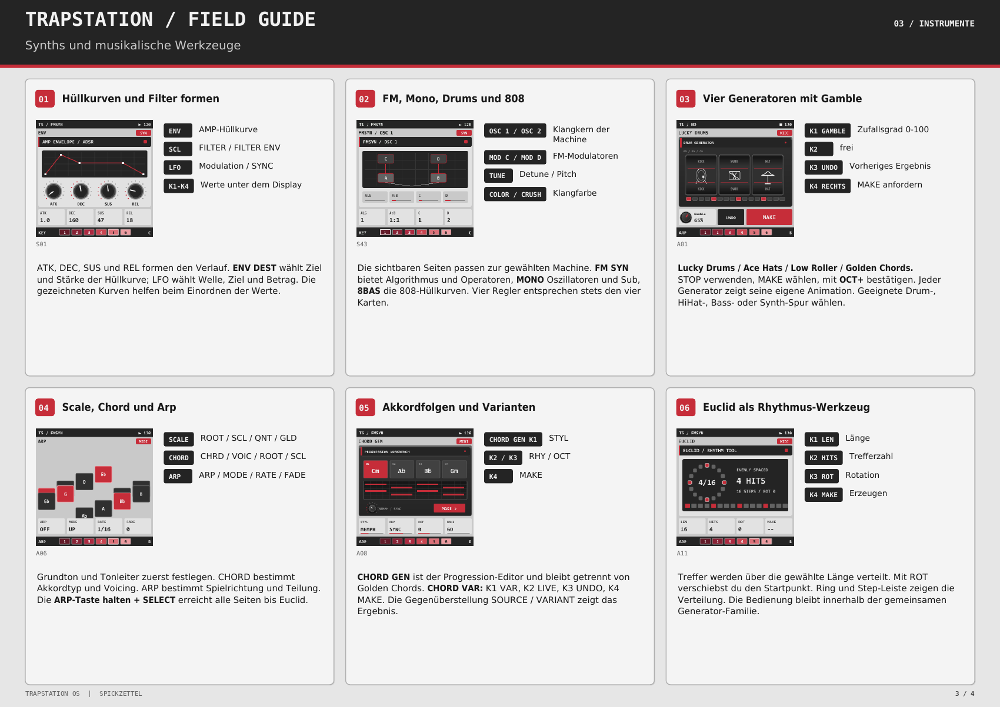
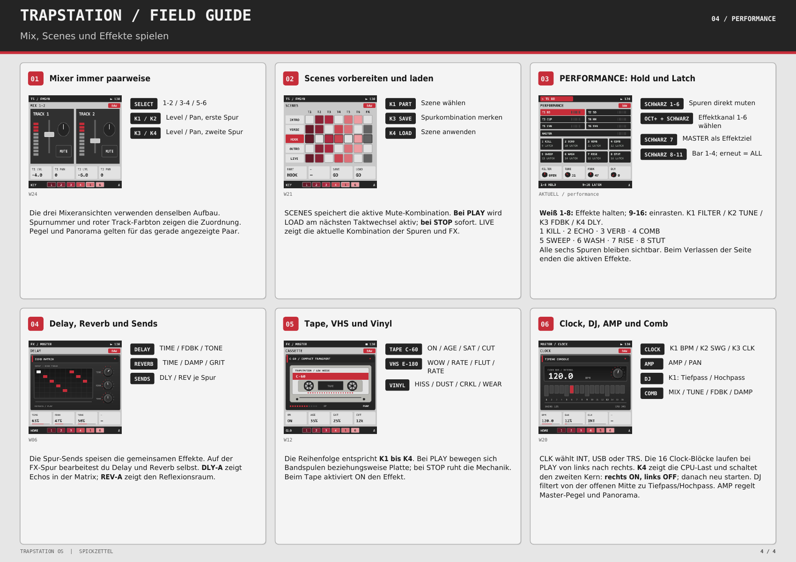

01 / Workspace

02 / Sampling

03 / Instruments

04 / Performance

01 / Workspace

02 / Sampling

03 / Instrumente

04 / Performance

Four pages to keep next to the FM-1: workspace, sampling, instruments, performance. They describe 1.0; what 1.1 adds (FM6) is in the user guide.
Vier Seiten für neben den FM-1: Workspace, Sampling, Instrumente, Performance. Sie beschreiben 1.0; was 1.1 dazubringt (FM6), steht in der Anleitung.







